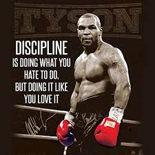
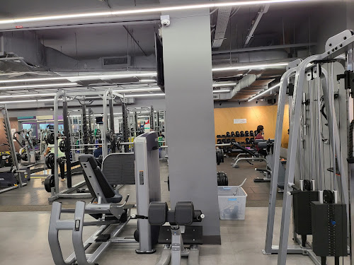
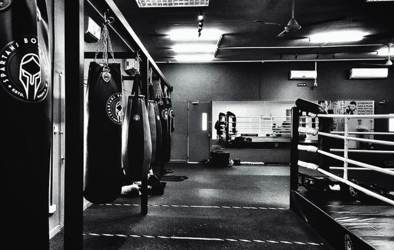
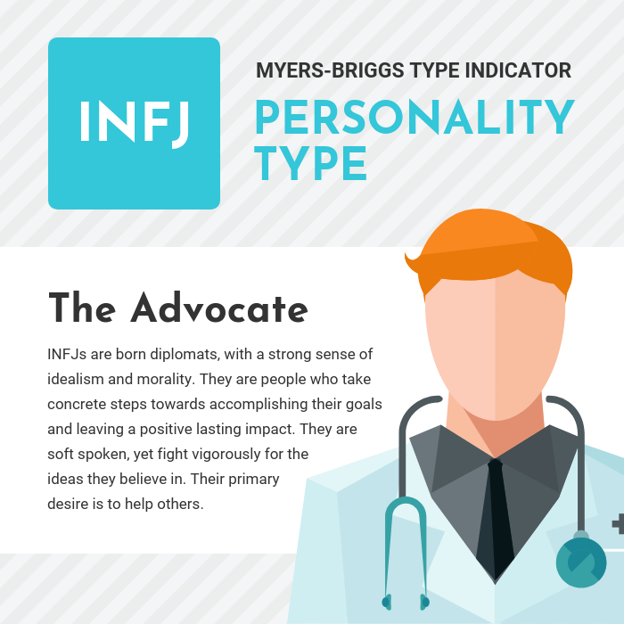

About Me

- My Values
- ·I believe in Discipline, Respect and Hard Work.
- ·One of my favourite quotes from Mike Tyson about discipline is "Discipline is doing what you hate to do. But doing it like you love it.
- ·I also believe in respecting everyone you come across as respect is a two way street. I also firmly believe that hard work always pays off, if you put in the work, your efforts will not betray you.
- ·Click on the picture to watch Mike Tyson talk about discipline.

- My Interests
- ·One of the interests I have is working out at the gym around 4-5times a week.
- ·I enjoy working out as the effort and hard work you put in the gym will always yield fruitful results.
- ·I also met the majority of my friends through the gym, which helped me make a lot of close friendships I hold dear.

- My Interests
- ·Another hobby I have is boxing for around 2-3days a week at a boxing gym called Spartans.
- ·I enjoy boxing as the sport keeps me really fit with all the training that we do. I also enjoy the close knit community between members that forms after countless training sessions together.
- ·Boxing also helped improve both my mental and physical health tremendously.

- My Personality
- ·I am a person with more introverted and observant personality traits.
- ·I am a open minded and flexible person who's always open to any new idea from anyone.
- ·While I might be quiet at first, but after getting comfortable with someone, I would be much more talkative.